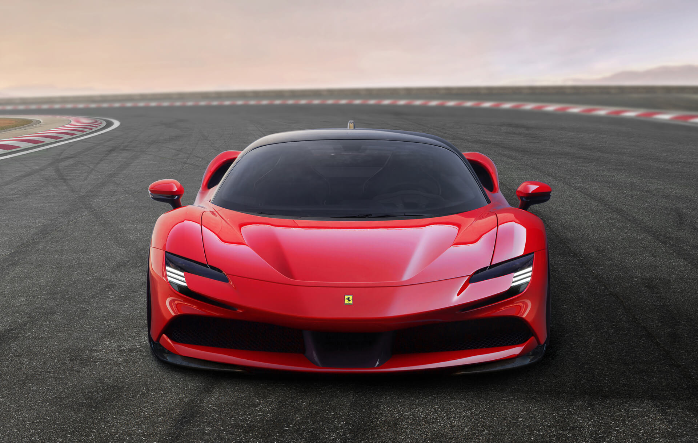
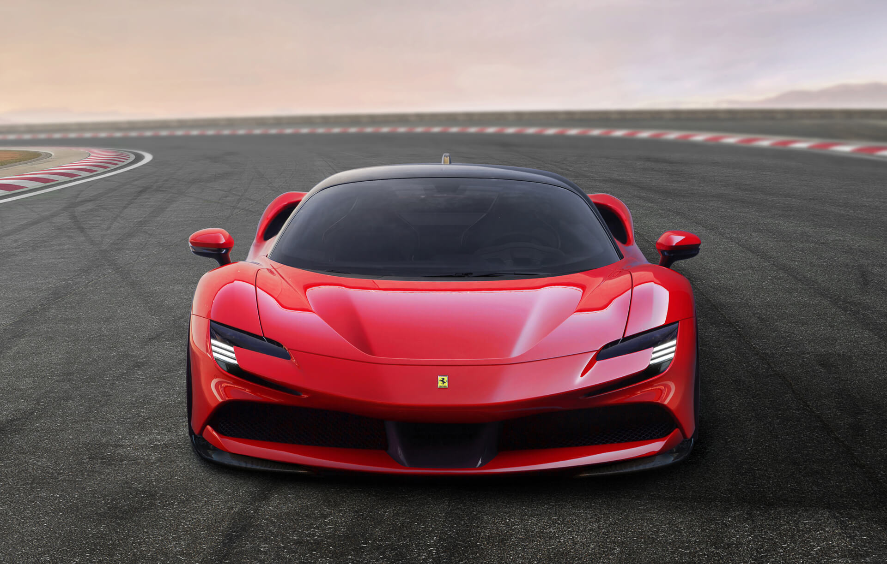
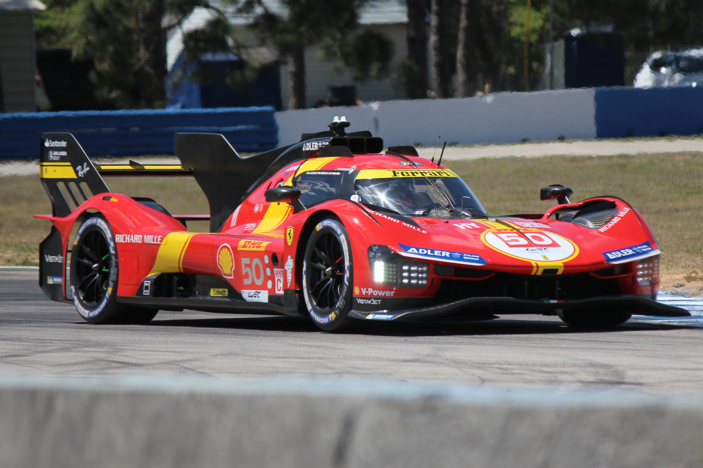
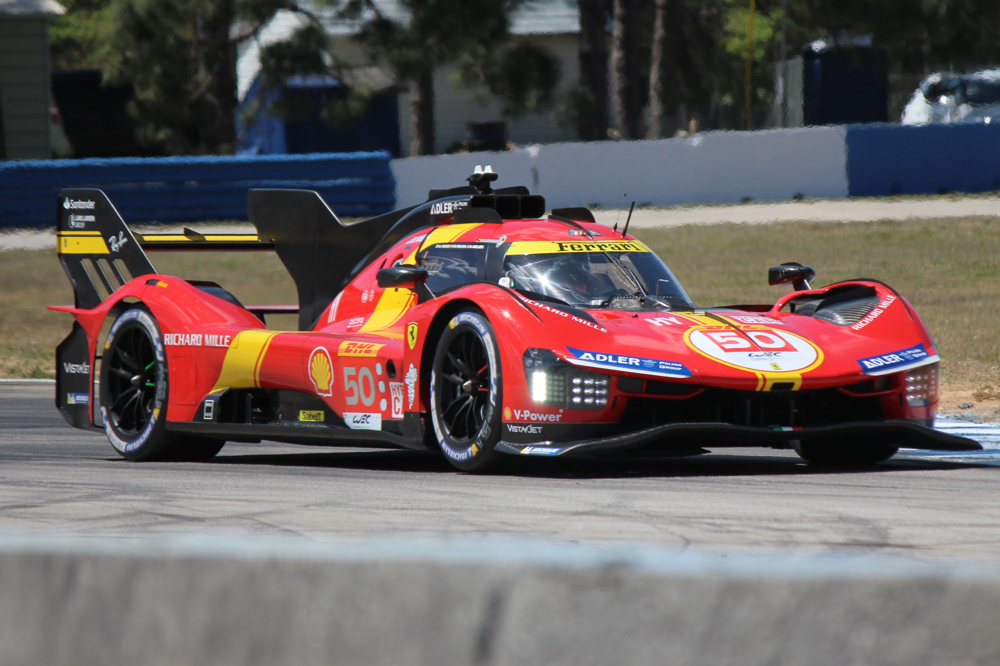

Porsche VS Ferrari
Скорость, технологии и престиж
Противостояние Porsche и Ferrari — это не просто борьба брендов, а столкновение двух философий: немецкой инженерной точности и итальянской страсти к скорости. Ferrari славится мощными V12 и элегантным дизайном, Porsche делает ставку на турбированные моторы, идеальную управляемость и надежность. Их соперничество особенно ярко проявилось в автоспорте и в борьбе за доминирование среди суперкаров.
Рождение легенд (1940–1950)
- Ferrari появилась в 1947 году, основатель Энцо Феррари стремился создать идеальный гоночный автомобиль. Уже в 1949 году Ferrari 166MM выиграла 24 часа Ле-Мана.
- Porsche возникла в 1948 году, когда Фердинанд Порше представил 356, лёгкий и манёвренный спорткар с заднемоторной компоновкой.
В этот период компании почти не соперничали: Porsche делал компактные и лёгкие автомобили, а Ferrari – мощные гран-туризмо с V12.
Первые столкновения на трассе (1960–1970)
- В 1960-х Ferrari доминировала в Ле-Мане, особенно с 250 GTO.
- Porsche ответила в 1969 году с 917, который в 1970 и 1971 годах уничтожил Ferrari на трассе Ле-Мана, положив начало долговечному господству Porsche в гонках на выносливость.
- В 1976 году Porsche представила 936, которая снова победила Ferrari в Ле-Мане, после чего итальянцы ушли из гонок на выносливость.
Но на дорогах Ferrari продолжала доминировать в категории суперкаров, выпуская Daytona и Berlinetta Boxer, а Porsche сосредоточилась на 911, который развивал культовый статус благодаря турбоверсии 930 Turbo.
Борьба за звание лучшего суперкара (1980–1990)
В 1980-х и 1990-х Ferrari и Porsche вышли на новый уровень конкуренции, выпуская радикально разные суперкаров, каждый из которых претендовал на звание лучшего в мире. Их борьба развернулась между мощностью и минимализмом Ferrari против высоких технологий и универсальности Porsche.
Ferrari F40 vs Porsche 959 – скорость против технологий
Ferrari и Porsche подошли к созданию суперкаров с абсолютно разными принципами:
- Ferrari F40 (1987) – настоящий гоночный болид для дорог. Оснащён 2,9-литровым V8 с двумя турбинами (478 л.с.), весил всего 1100 кг благодаря карбоновому кузову. Он разгонялся до 324 км/ч, став самым быстрым серийным автомобилем того времени. Но при этом он был предельно жёстким, без ABS, усилителя руля, климат-контроля, всё ради максимального драйва.
- Porsche 959 (1986) – полная противоположность F40. Он был технологическим прорывом: полный привод, адаптивная подвеска, двойной турбооппозитник (450 л.с.), электроника, регулируемая аэродинамика. Разгонялся до 317 км/ч, но в отличие от F40 был намного стабильнее и удобнее в управлении.
Хотя F40 превосходил 959 в максимальной скорости, Porsche показала, что суперкар может быть не только быстрым, но и технологически продвинутым, удобным и безопасным.
Ferrari F50 vs Porsche 911 GT1 – суперкар против гоночного болида

В 1990-х Ferrari сделала ставку на технологии Формулы-1, а Porsche решила бороться в автоспорте:
- Ferrari F50 (1995) – преемник F40, но уже с атмосферным 4,7-литровым V12, построенным на базе двигателя болидов F1. Разгон до 325 км/ч, карбоновый монокок, но по драйву уступал F40 – он стал более «дорожным».
- Porsche 911 GT1 (1996) – фактически гоночный болид с номерами, сделанный для победы в Ле-Мане. Имел 600-сильный турбомотор, карбоновый кузов и выиграл Ле-Ман в 1998 году, доказав превосходство Porsche в автоспорте.
Ferrari продолжала делать эмоциональные, харизматичные супер- и гиперкары, Porsche – рациональные, технологичные и гоночные. Эта философия определит их дальнейшее противостояние.
Современное противостояние (2020-е)
Сейчас Ferrari и Porsche борются сразу на нескольких фронтах:
-
 Porsche 911 Turbo SСуперкары:Ferrari SF90
Porsche 911 Turbo SСуперкары:Ferrari SF90- Ferrari SF90 Stradale (1000 л.с.) vs Porsche 992 Turbo S (650 л.с.).
- Ferrari делает ставку на V8 и гибриды, Porsche — на эффективность и технологии.
-
Электрические спорткары:
- Porsche Taycan (2020) — первый электроспорткар Porsche.
- Ferrari пока только готовится выпустить первый электромобиль в 2025 году.
-
Автоспорт:
- Porsche вернулась в Ле-Ман с 963 LMDh.
- Ferrari в 2023 году выиграла Ле-Ман впервые за 50 лет с 499P Hypercar.
 Porsche 963 LMDhFerrari 499P Hypercar
Porsche 963 LMDhFerrari 499P Hypercar
Ferrari по-прежнему делает яркие, эмоциональные супер- и гиперкары, а Porsche ориентируется на инженерное превосходство и универсальность. Соперничество продолжается, и каждая новая модель — это новая глава в их бесконечной борьбе за звание лучшего.